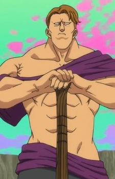

Ryuunosuke Watanuki is a Japanese voice actor.
- Gender: Male
- Birthday: June 24
- Hometown: Saitama, Japan

|

|
|---|
| |
Ryuunosuke Watanuki is a Japanese voice actor.
|
|
|---|
|  | Theo | The Seven Deadly Sins: Revival of The Commandments | Theo is a priest in the Druids sacred land Istar and protector of the heads of the Druids. Despite his intimidating appearance, he is cheerful and friendly. |